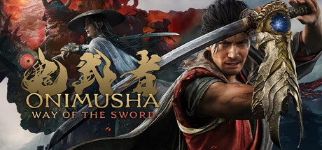

鬼武者系列时隔 20 年的全新作，主角宫本武藏（面模三船敏郎），江户初期被瘴气侵袭的京都，和风暗黑幻想剑戟动作，追求真实斩击手感与「一闪」。
想象你踏进江户初期的京都——但空气不对。一种叫「瘴气」的东西泡透了整座城，把本该埋在地狱最深处的魔物「幻魔」拽到了人间。它们附身、屠城，清水寺的舞台、大江山的山道，全成了噬人之地。晨雾里光束斜穿树冠，寺庙的红漆被瘴气啃出黑斑——这是一座和风暗黑幻想的京都，美得阴森，危险得具体。你是宫本武藏，来这里本只为一件事：把剑练到天下无双。
可幻魔不给你证道的机会。命悬一线时，你戴上了「鬼之笼手」——一件不属于人的兵器，它给你斩杀幻魔的力量，代价是你从此不再是纯靠一己之力的武者。笼手里寄宿着一个声音，一个叫「鬼之佳人」的鬼族女性，她引导你，却不告诉你全部。你一路斩魔，靠吸食它们的灵魂变强，同时撞上另一个和你一样握有笼手的男人——佐佐木严流，你的宿敌。只是他用这份力量制造杀戮，而不是救人。
越往下走，越难回答一个问题：那只让你所向披靡的笼手，究竟是武器，还是正在慢慢改写你的东西？那个在笼手里对你说话的声音，掀开真相时会是恩人，还是另一重算计？而你毕生追求的「以己证道」，当胜利必须借鬼之力才能取得时，还算不算数？这不是一个关于斩了多少幻魔的故事，是一个关于「一个武者愿意为『强』付出多少『自己』」的故事——当真一闪的白光再次亮起，握剑的到底是武藏，还是笼手里的鬼？
「和风暗黑幻想」，是把历史真实感的江户京都和地狱幻魔的噩梦造型撞进同一座城的美学。底色是考究的和风时代剧写实——晨雾、木造寺庙、武士甲胄；变异在于「瘴气」像一层腐蚀性的黑雾，把真实世界啃出扭曲与妖异，让超自然更像是对现实的入侵而非布景。色彩上以京都的青灰晨雾撞幻魔与鬼之力的血红双色为骨。整体调性延续系列一贯的哥特式压抑，兼顾暴力、断肢的成熟向表现。
「和风暗黑幻想」这套美学有很深的影像根系。1950 至 1960 年代，黑泽明的剑戟片（《七武士》《用心棒》）和三船敏郎的银幕形象，奠定了武士决斗的镜头语言与气质——这一作请三船敏郎做武藏面模，正是对这条血脉的直接回溯。2000 年代初鬼武者初代三部曲把这套和风加上幻魔奇幻，成了 PS2 时代的招牌。到 2019 年《只狼》、2020 年《对马岛之魂》把和风剑戟的动作与镜头推到新高度。剑之道站在这条线的最新一环——用 RE Engine 的高精度面部捕捉、物件破坏与布料物理，把 20 年前的鬼武者重新拉回 3A 顶配，但刻意避开魂系的高门槛，走「爽快剑戟」的路子。
基于体验清单 · 审美偏好 · IP故事三维度综合选出
点击链接跳转到对应平台查看 · 仅整理外部链接